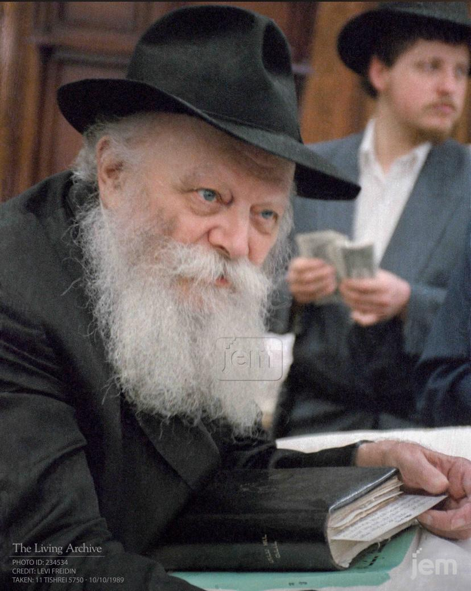

דבר השליח
"שמי הוא הרב מענדי מנדלזון, ויחד עם רעייתי ריקי וילדינו לוי ומוסיא, זכינו להקים את ביתנו כאן בפלובדיב. אנו פועלים תחת חזונו הבלתי מתפשר של נשיא דורנו, הרבי מליובאוויטש, שדרש מאיתנו להפוך כל אבן בעולם כדי למצוא נשמה יהודית ולהאיר לה פנים. פלובדיב היא עיר עם נשמה עתיקה, ואנו כאן כדי להפיח בה חיות יהודית רעננה, להעניק אוזן קשבת, עזרה גשמית וליווי רוחני לכל יהודי באשר הוא. הבית שלנו פתוח עבורכם."

נשיא הדור - כ"ק אדמו"ר מליובאוויטש
מנהיגותו של הרבי חובקת עולם, דואגת לכל פרט ופרט בבריאה ומכוונת את הדור כולו אל הגאולה האמיתית והשלימה.
שישה סיפורי מופת והדרכה
1. ספירת היהלומים
פעם הגיע יהודי אל הרבי לאחר שעות ארוכות של חלוקת דולרים. האיש תהה בקול כיצד הרבי, בגיל מתקדם כזה, מסוגל לעמוד על רגליו יום שלם מבלי להתעייף. הרבי הביט בו בעיניים מאירות והשיב: "כשסופרים יהלומים, לא מתעייפים". מסר זה מלווה אותנו בכל רגע בשליחות – כל יהודי הוא יהלום יחיד ומיוחד בכתרו של המלך, ועבורו אין מקום לעייפות.
2. להדליק את המנורה
סטודנט צעיר שאל את הרבי מה תפקידו בעולם. הרבי הסביר לו באמצעות משל: "תאר לעצמך אדם שהולך בלילה חשוך עם פנס כבוי. בדרך הוא פוגש מדליק פנסים שיש בידו אש. תפקידי הוא להחזיק את האש, אבל התפקיד שלך הוא להושיט את הפנס שלך כדי שאדליק אותו. לאחר מכן, עליך ללכת ולהדליק פנסים של אחרים".
3. הברכה שהקדימה את המחלה
יהודי מפריז קיבל מכתב מהרבי ובו המלצה לבדוק את הדיאטה שלו ולהוסיף במצוות מסוימות. האיש לא הבין מדוע, שכן הרגיש מצוין. חודשיים לאחר מכן, התגלתה אצלו בעיה בריאותית שהרופאים אמרו כי "בנס" התגלתה מוקדם מספיק. הרבי, בראייתו למרחוק, ראה את הצורך עוד לפני שהשתלשל לעולם הגשמי.
4. אין יהודי אבוד
פרופסור מפורסם טען בפני הרבי שאין טעם להשקיע ביהודים הרחוקים מאוד מהתורה. הרבי שאל אותו: "אם היה לך בן שהלך לאיבוד במדבר, היית מפסיק לחפש אותו?" הפרופסור ענה שבוודאי שלא. "כל יהודי הוא הבן של הקדוש ברוך הוא", סיכם הרבי, "ואב לעולם לא מוותר על בנו".
5. מנהיגות של העצמה
פוליטיקאי בכיר אמר לרבי: "אני רוצה להיות מונהג על ידך". הרבי ענה לו: "אני לא מחפש חסידים שיעשו מה שאני אומר, אני מחפש להפוך כל אחד למנהיג בזכות עצמו. העולם זקוק למנהיגים שיפיצו אור בסביבתם, לא למונהגים פסיביים".
6. המכתב שהגיע בזמן
חייל בודד הרגיש ייאוש עמוק וכתב לרבי מכתב מלא כאב. הוא לא ציפה לתשובה מהירה. יומיים לאחר מכן קיבל טלפון מהמזכירות עם מסר אישי מהרבי: "הקב"ה נמצא איתך גם בתוך הקושי, וחיוך אחד שלך יכול להאיר עולם שלם". החייל סיפר שהמסר הזה הציל את חייו באותו רגע.
היסטוריה וגבורה יהודית בפלובדיב
קהילת פלובדיב היא אחת הקהילות היהודיות העתיקות והמפוארות ביותר בכל חבל הבלקן. שורשיה של הקהילה מגיעים עד לתקופה הרומית, אך תור הזהב שלה התרחש תחת השלטון העות'מאני, אז הפכה פלובדיב למרכז רוחני ותרבותי עבור יהדות ספרד. בשיאה, מנתה הקהילה אלפי יהודים שחיו בהרמוניה מוחלטת עם שכניהם הבולגרים, כשהם מנהיגים חיי קהילה תוססים עם בתי כנסת מפוארים, בתי ספר ובתי חסד.
הפרק המרגש והמשמעותי ביותר בהיסטוריה של פלובדיב נכתב במהלך מלחמת העולם השנייה. בשנת 1943, כאשר רכבות הגירוש כבר המתינו בתחנה כדי לקחת את יהודי העיר אל הבלתי נודע, קרה נס אנושי חסר תקדים. הבישוף המקומי קיריל, יחד עם פוליטיקאים ואזרחים בולגרים רבים, עמדו כחומה בצורה מול השלטונות הנאציים. הם הצהירו כי אם היהודים יגורשו, הם יצטרפו אליהם לרכבות. בזכות אומץ לבם נמנע הגירוש, ויהודי בולגריה בכלל ופלובדיב בפרט ניצלו מהשמדה.
לאחר המלחמה, מרבית הקהילה עלתה לארץ ישראל, אך הרוח היהודית נותרה חקוקה בקירות העיר העתיקה. כיום, אנו בבית חב"ד זוכים לסגור מעגל היסטורי. אנו פועלים לשמר את המורשת המפוארת הזו, לחבר את הדור הצעיר לשורשיו ולהבטיח שהאש היהודית בפלובדיב תמשיך לבעור בעוצמה, כעדות ניצחת לנצחיות עם ישראל.
מדריך מפורט למטייל בפלובדיב
1. התיאטרון הרומי (Ancient Theatre)
נחשב לאחד התיאטראות הרומיים השמורים ביותר בעולם. הוא נבנה במאה ה-2 לספירה וממוקם בנקודה אסטרטגית המעניקה תצפית פנורמית מרהיבה על כל העיר. כיום הוא עדיין משמש להופעות תחת כיפת השמיים, המשלבות היסטוריה חיה עם אמנות מודרנית.
2. העיר העתיקה (Old Town)
מוזיאון פתוח של ארכיטקטורה. שיטוט בסמטאות המרוצפות אבן יפגיש אתכם עם בתי עץ צבעוניים מהמאה ה-19, גלריות אמנות וסדנאות אמנים. אל תחמיצו את "בית הינדליאן" הידוע בציורי הקיר המדהימים שלו.
3. המדרחוב הארוך (Main Pedestrian Street)
זהו המדרחוב הארוך ביותר באירופה. הוא רצוף בחנויות, בתי קפה ומבנים יפהפיים. מתחת למפלס הרחוב תוכלו לראות שרידים של האצטדיון הרומי העתיק שחלקו הגדול עדיין קבור מתחת לבניינים המודרניים.
4. גבעת נבט טפה (Nebet Tepe)
המקום בו הכל התחיל לפני 8,000 שנה. כאן נמצאים שרידי היישוב הראשון בפלובדיב. זהו המקום המושלם לצפות בשקיעה מעל הרי הבלקן והרי הרודופי המקיפים את העיר.
5. רובע קפנה (Kapana District)
רובע האמנים והיצירה של פלובדיב. אזור של רחובות קטנים ומקושטים בדגלים, המלא בסטודיו לעיצוב, בתי קפה ייחודיים ואווירה צעירה ותוססת. מקום נהדר לספוג תרבות מודרנית בתוך העיר ההיסטורית.
שבת קודש בבית חב"ד
אנו מזמינים אתכם לחוויה יהודית מרוממת בשבתות וחגים. סעודות השבת שלנו ידועות באווירה החמה, בדברי התורה ובניגונים המקרבים.
עלות השתתפות: 50$ למבוגר | 30$ לילד.
הרשמה: יש להירשם בווטסאפ עד יום חמישי בצהריים.